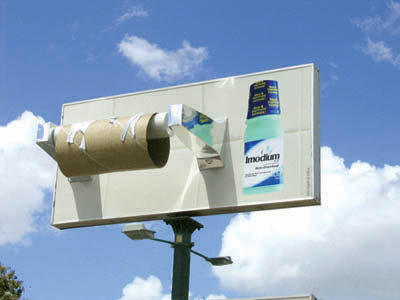

My Work
Cicciodamplo.com

A fully designed and developed satirical website built in just 2 days, combining web development, AI tools (ChatGPT and Claude Code), and sharp copywriting skills. The site tells the story of Ciccio Damplo, a fictional Sicilian chef who supposedly conquered the world with arancini, 30 Michelin stars, and endorsements from global celebrities. From concept to launch, the entire project was ideated, written, designed, and deployed independently, proving that with the right tools and creative direction a complete web product can go live in record time.
Visit The WebsiteRTO Specialist – Full Marketing & Web Strategy

For RTO Specialist, a Training Resources provider startup serving Australia's RTOs in the vocational education sector, I led a complete brand and digital transformation. Starting from market research and competitive analysis, I built a comprehensive business plan and marketing strategy from the ground up. I redesigned the entire website from scratch, redefining the UX, pricing architecture, visual design, and SEO structure, collaborating directly with the development team to implement every change. To grow awareness in a market where trust is everything, I developed the company's LinkedIn, Facebook, and Instagram presence, writing all copy and directing content strategy. As Business Developer, I also managed outreach to potential clients and strategic partners, working to expand the company's network across Australia's RTO sector.
Visit The WebsiteTrash Phenomena in Social Network

This project explores how brands use "trash", content-irony, surprise, and provocative messaging to capture attention, drive conversations, and increase memorability. By analysing social media trends and real campaigns, it highlights how carefully designed borderline content can engage audiences while maintaining brand ethics and coherence. The study provides actionable insights for marketers and creators to stand out in the digital noise without losing narrative control.
Check Out My WorkMarketing Plan for Blooper.AI
This project involves introducing the start-up Blooper, an AI-driven video pre-production platform, into Europe's content-creation scene to meet the growing need for faster, affordable, and unified workflows. Blooper streamlines every step of pre-production, from script breakdown, moodboard, storyboard creation, location scouting, and polished pitch-deck generation into a single, user-friendly app. With demand from Film, TV and digital advertising industries for pre-production software continuing to climb, there's a huge market opportunity for a tool that replaces outdated, fragmented processes. Guided by deep market analysis and competitor research the plan refine Blooper positioning and product offering, highlighting its unique value proposition.
Check Out My WorkStefano Tu Giuru Personal Website

This is my personal portfolio website, entirely designed and developed by me from scratch. Built with clean HTML, CSS, and JavaScript, it showcases my work in marketing, creative projects, and video production. The site features a responsive design, smooth animations, and an intuitive user experience. I continuously update and optimize it to reflect my evolving skills and new projects, ensuring it remains a dynamic representation of my professional journey and capabilities in the digital space.
Visit The Website